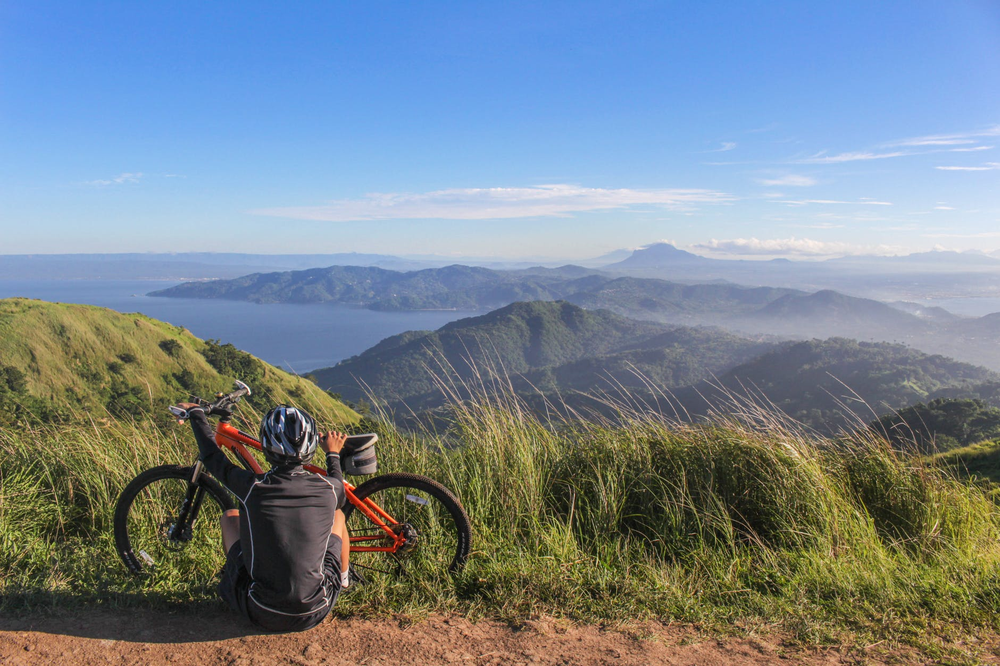

EUROPE

WILD ATLANTIC WAY
La côte sauvage d'Irlande
De la pointe de Malin Head, fouettée par le vent, au havre de paix du port de Kinsale, partez en
expédition sur la plus longue route côtière balisée au monde.
Le Wild Atlantic Way est un trajet sensationnel mêlant falaises vertigineuses, villes animées,
plages secrètes et baies spectaculaires. Que vous le parcouriez de bout en bout ou que vous le
découvriez au fil de vos envies, c'est une expérience unique qui vous attend.
En savoir plus
 Comté de Donegal
Comté de Donegal


DUBLIN
La ville au naturel
Bienvenue à Dublin, une capitale animée aussi intime qu'un village et aussi conviviale que votre
pub irlandais local. Mariant harmonieusement les sites touristiques classiques, la vie sociale
animée et les terrains de jeux naturels de la Baie de Dublin et les montagnes qui l'encerclent,
cette ville décontractée est une aventure en soi.
En savoir plus
Oui, la ville de Dublin à elle seule est plus que suffisante pour remplir des vacances, mais il y a tant d'autres choses à voir ! Prenez place à bord du Dart (train) et longez la baie de Dublin pour découvrir tout un tas de trésors. De jolis villages remplis d'un patrimoine vivant, d'une cuisine fantastique et d'un excellent « craic » ; tout cela à quelques minutes de la ville. L'ironie est qu'ils sont tous différents. Tout ce qu'il vous reste à faire, c'est de choisir votre préféré...
Idées de visites :
Sur la route du whiskey Irlandais
Le whiskey irlandais a de nombreux fans dans le monde entier, mais nous aimerions que vous le
dégustiez sur sa terre natale. Nous voulons vous emmener à la rencontre des personnalités
uniques qui ont fait l'histoire de notre « uisce beatha » (ishka baa-ha) ou whiskey. En savoir plus
Visualiser le parcours du Whiskey ici ! .


L'AUTRICHE

Les endroits incontournables de l'Autriche
Les activités à réaliser en Autriche
Vacances en familles
Des programmes de loisirs attrayants pour toute la famille, du divertissement et de l'aventure dans la nature, des parcs d'aventure variés et des visites de musées passionnantes pour les enfants rendent les vacances en famille en Autriche inoubliables.
Lire la suite
Randonnées et montagne
Les sentiers qu’offre l’Autriche sont aussi variés que les expériences que la randonnée permet.
Lire la suite
Villes et cultures
La longue histoire de l’Autriche a produit une multitude de curiosités et de trésors culturels. Salles de concert, théâtres, musées et galeries invitent au plaisir de la découverte artistique.
Lire la suite
Vélo et VTT
Découvrez l'Autriche à vélo : des itinéraires cyclables faciles jusqu’aux circuits VTT exigeants, toutes sortes de parcours se trouvent en Autriche.
Lire la suite
Circuits
Des itinéraires thématiques, des circuits pour dénicher les coins secrets ou pour découvrir les coups de cœur et les meilleurs sites. Ils vous donneront de l’inspiration et vous aideront à organiser votre escapade en Autriche, selon vos centres d’intérêt.
Lire la suite
Ski et sports d'hiver
Des pistes sublimes, des circuits enneigés et des paysages d’hiver romantiques : en Autriche, paradis des sports d’hiver, chacun trouve son bonheur. Option sportive ou plus contemplative : l’hiver est toujours synonyme de plaisir.
Lire la suite
Hébergements insolites
Ici lorsque l'on arrive, on est étonné. Dans ces hébergements insolites, une nuitée devient une
expérience très spéciale qu'elle soit dans les arbres ou à côté de dinosaures.
En savoir plus
Les indispensables pour partir en Europe :
- Un bon appareil photo
- Billet d'avion/train
- Assurance voyage
- Une polaire
- De bonnes chaussures
- Permis de conduire
- Argent
- Une GOPRO
- Un parapluie /Kway
Budget journalier une fois sur place
| Transports | 15.47€ (22.5%) |
| Hebergements | 25.23€ (36.7%) |
| Nourriture | 16.64€ (24.2%) |
| Visites et loisirs | 11.35€ (16.5%) |
Budget voyage
| Billet d'avion aller-retour | entre 100 et 500€ |
| Billet d'avion aller simple | entre 50 et 200 € |